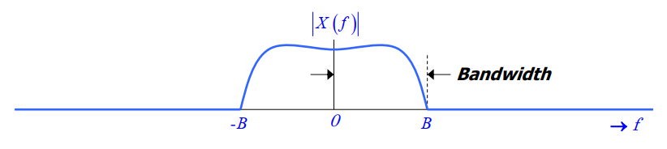
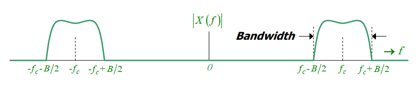
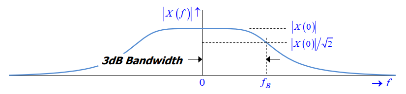
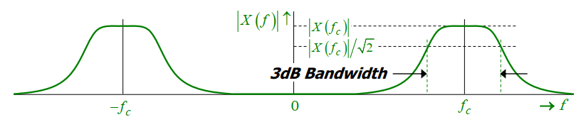
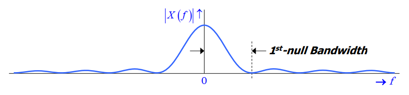
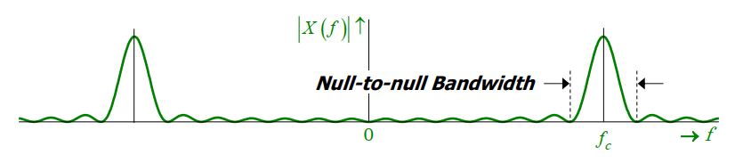

<!DOCTYPE html>


<html lang="zh-CN,en,default">


<head>
  <meta charset="utf-8" />
    
  <meta name="viewport" content="width=device-width, initial-scale=1, maximum-scale=1" />
  <title>
    信号与系统学习笔记#4 |  清柠
  </title>
  <meta name="generator" content="hexo-theme-ayer">
  
  <link rel="shortcut icon" href="/favicon.ico" />
  
  
<link rel="stylesheet" href="/dist/main.css">

  
<link rel="stylesheet" href="https://cdn.jsdelivr.net/gh/Shen-Yu/cdn/css/remixicon.min.css">

  
<link rel="stylesheet" href="/css/custom.css">

  
  
<script src="https://cdn.jsdelivr.net/npm/pace-js@1.0.2/pace.min.js"></script>

  
  

  

<link rel="alternate" href="/atom.xml" title="清柠" type="application/atom+xml">
</head>

</html>

<body>
  <div id="app">
    
      <canvas class="fireworks"></canvas>
      <style>
        .fireworks {
          position: fixed;
          left: 0;
          top: 0;
          z-index: 99999;
          pointer-events: none;
        }
      </style>
      
      
    <main class="content on">
      <section class="outer">
  <article
  id="post-2021-02-25-01"
  class="article article-type-post"
  itemscope
  itemprop="blogPost"
  data-scroll-reveal
>
  <div class="article-inner">
    
    <header class="article-header">
       
<h1 class="article-title sea-center" style="border-left:0" itemprop="name">
  信号与系统学习笔记#4
</h1>
 

    </header>
     
    <div class="article-meta">
      <a href="/2021/02/25/2021-02-25-01/" class="article-date">
  <time datetime="2021-02-25T03:26:01.000Z" itemprop="datePublished">2021-02-25</time>
</a> 
  <div class="article-category">
    <a class="article-category-link" href="/categories/%E8%AF%BE%E7%A8%8B%E5%AD%A6%E4%B9%A0%E7%AC%94%E8%AE%B0/">课程学习笔记</a>
  </div>
  
<div class="word_count">
    <span class="post-time">
        <span class="post-meta-item-icon">
            <i class="ri-quill-pen-line"></i>
            <span class="post-meta-item-text"> 字数统计:</span>
            <span class="post-count">918</span>
        </span>
    </span>

    <span class="post-time">
        &nbsp; | &nbsp;
        <span class="post-meta-item-icon">
            <i class="ri-book-open-line"></i>
            <span class="post-meta-item-text"> 阅读时长≈</span>
            <span class="post-count">4 分钟</span>
        </span>
    </span>
</div>
 
    </div>
      
    <div class="tocbot"></div>


  
    <div class="article-entry" itemprop="articleBody">
       
  <p></p><a id="more"></a>

<h1 id="能量谱密度"><a href="#能量谱密度" class="headerlink" title="能量谱密度"></a>能量谱密度</h1><p>能量谱密度（energy spectral density）描述了信号的能量在其频率上的分布情况。在时域中，信号\(x(t)\)的能量可通过下面这个公式计算：</p>
<p>\[<br>E = \int_{-\infty}^{\infty} \lvert x(t) \rvert ^2 \mathrm{d}t<br>\]</p>
<p>Rayleigh’s energy theorem 提供了另一个在频域中计算能量的方式：</p>
<p>\[<br>E = \int_{-\infty}^{\infty} \lvert X(f) \rvert ^2 \mathrm{d}f<br>\]</p>
<p>因为上述公式右部的积分是信号\(x(t)\)的总信号，我们可以把被积式\(\lvert X(f) \rvert ^2\)看作是该信号在频率\(f\)上的能量密度。由此可得能量谱密度的定义为：</p>
<p>\[<br>E_x(f) = \lvert X(f) \rvert ^2\ \mbox{(Joules/Hz)}<br>\]</p>
<p>\(E_x(f)\)的性质：</p>
<ul>
<li>\(E_x(f)\)是\(f\)的一个实函数。</li>
<li>对于任意\(f\)，\(E_x(f) \geq 0\)成立。</li>
<li>当\(x(t)\)为实函数时，\(E_x(f)\)是偶函数。</li>
</ul>
<h1 id="功率谱密度"><a href="#功率谱密度" class="headerlink" title="功率谱密度"></a>功率谱密度</h1><p>前面关于能量谱密度的内容仅在能量信号上有意义。类似的，对于功率信号，可以通过功率谱密度（power spectral density）来描述其功率在频率上的分布情况。</p>
<p>在时域中，功率被定义为信号幅度平方的平均量：</p>
<p>\[<br>P = \lim_{T \to \infty} \frac{1}{2T} \int_{-T}^{T} \lvert x(t) \rvert ^2 \mathrm{d}t<br>\]</p>
<p>Rayleigh’s power theorem 提供了另一个在频域中计算功率的方式：</p>
<p>\[<br>P = \int_{-\infty}^{\infty} \lim_{T \to \infty} \frac{1}{2T} \lvert X_T(f) \rvert ^2 \mathrm{d}f<br>\]</p>
<p>因为上述公式右部的积分是信号\(x(t)\)的平均功率，我们可以把被积式\(\lim_{T \to \infty} \frac{1}{2T} \lvert X_T(f) \rvert ^2\)看作是该信号在频率\(f\)上的功率密度。由此可得功率谱密度（Energy Spectral Density）的定义为：</p>
<p>\[<br>P_x(f) = \lim_{T \to \infty} \frac{1}{2T} \lvert X_T(f) \rvert ^2\ \mbox{(Watts/Hz)}<br>\]</p>
<p>\(P_x(f)\)的性质：</p>
<ul>
<li>\(P_x(f)\)是\(f\)的一个实函数。</li>
<li>对于任意\(f\)，\(P_x(f) \geq 0\)成立。</li>
<li>当\(x(t)\)为实函数时，\(P_x(f)\)是偶函数。</li>
</ul>
<h2 id="周期信号的功率谱密度"><a href="#周期信号的功率谱密度" class="headerlink" title="周期信号的功率谱密度"></a>周期信号的功率谱密度</h2><p>上述计算功率谱密度的公式比较复杂，然而在周期函数中，结果会更加直观一些。</p>
<p>令\(f_p\)，\(T_p\)和\(c_k\)分别为周期信号\(x_p(t)\)的基本频率，周期和傅里叶系数。</p>
<p>\(x_p(t)\)的功率谱密度：</p>
<p>\[<br>P_x(f) = \sum_{k=-\infty}^{\infty} \lvert c_k \rvert ^2 \delta (f- \frac{k}{T_p})<br>\]</p>
<p>\(x_p(t)\)的平均功率：</p>
<p>\[<br>P = \int_{-\infty}^{\infty} P_x(f) \mathrm{d}f = \sum_{k=-\infty}^{\infty} \lvert c_k \rvert ^2<br>\]</p>
<h1 id="频宽"><a href="#频宽" class="headerlink" title="频宽"></a>频宽</h1><p>信号\(x(t)\)的频宽（bandwidth）是对其频率范围的衡量。</p>
<h2 id="Bandlimited-Signals"><a href="#Bandlimited-Signals" class="headerlink" title="Bandlimited Signals"></a>Bandlimited Signals</h2><ul>
<li><p>Lowpass Signal</p>
<p>如果一个信号的频率成分在一个确定的有限频率之上都为零，那么这个信号被称为 bandlimited lowpass signal。</p>
<p>\[<br>\lvert X(f) \rvert = 0;\quad \lvert f \rvert &gt; B<br>\]</p>
<p>其中\(B\)是信号的频宽。</p>
</li>
</ul>
<p></p>
<ul>
<li><p>Bandpass Signal</p>
<p>如果一个信号的频率成分在一个确定的有限频率范围之外都为零，那么这个信号被称作 bandlimited bandpass signal。</p>
<p>\[<br>\lvert X(f) \rvert = 0;\quad \lvert f \rvert &lt; f_c - B/2 \ \mbox{or}\ \lvert f \rvert &gt; f_c + B/2<br>\]</p>
<p>其中\(f_c\)和\(B\)分别为该信号的中心频率（center frequency）和频宽。</p>
</li>
</ul>
<p></p>
<h2 id="Signals-with-Unrestricted-Band"><a href="#Signals-with-Unrestricted-Band" class="headerlink" title="Signals with Unrestricted Band"></a>Signals with Unrestricted Band</h2><h3 id="3dB-Bandwidth"><a href="#3dB-Bandwidth" class="headerlink" title="3dB Bandwidth"></a>3dB Bandwidth</h3><ul>
<li><p>Lowpass Signal</p>
<p>The 3dB bandwidth of a lowpass signal \(x(t)\) is defined as the frequency at which \(\lvert X(f) \rvert = \lvert X(0) \rvert / \sqrt{2}\) first occurs when \(f\) is increased from 0.</p>
<p>\(f_B\) is called the 3dB frequency because \(20\log_{10}(\lvert X(f_B) / X(0)\rvert) = 20\log_{10}(1/\sqrt{2}) \approx -3.01\ \mbox{dB}\)</p>
</li>
</ul>
<p></p>
<ul>
<li><p>Bandpass Signal</p>
<p>Likewise, the 3dB bandwidth of a bandpass signal \(x(t)\) with center frequency \(f_c\) is defined as illustrated below:</p>
</li>
</ul>
<p></p>
<h3 id="1st-null-Bandwidth"><a href="#1st-null-Bandwidth" class="headerlink" title="1st-null Bandwidth"></a>1<sup>st</sup>-null Bandwidth</h3><ul>
<li><p>Lowpass Signal</p>
<p>The 1<sup>st</sup>-null bandwidth of a lowpass signal \(x(t)\) is defined as the frequency at which \(\lvert X(f) \rvert = 0\) first occurs when \(f\) is increased from 0:</p>
</li>
</ul>
<p></p>
<ul>
<li><p>Bandpass Signal</p>
<p>Likewise, the 1<sup>st</sup>-null (a.k.a. null-to-null) bandwidth of a bandpass signal \(x(t)\) with center frequency \(f_c\) is defined as illustrated below:</p>
</li>
</ul>
<p></p>
 
      <!-- reward -->
      
      <div id="reword-out">
        <div id="reward-btn">
          打赏
        </div>
      </div>
      
    </div>
    

    <!-- copyright -->
    
    <footer class="article-footer">
       
<div class="share-btn">
      <span class="share-sns share-outer">
        <i class="ri-share-forward-line"></i>
        分享
      </span>
      <div class="share-wrap">
        <i class="arrow"></i>
        <div class="share-icons">
          
          <a class="weibo share-sns" href="javascript:;" data-type="weibo">
            <i class="ri-weibo-fill"></i>
          </a>
          <a class="weixin share-sns wxFab" href="javascript:;" data-type="weixin">
            <i class="ri-wechat-fill"></i>
          </a>
          <a class="qq share-sns" href="javascript:;" data-type="qq">
            <i class="ri-qq-fill"></i>
          </a>
          <a class="douban share-sns" href="javascript:;" data-type="douban">
            <i class="ri-douban-line"></i>
          </a>
          <!-- <a class="qzone share-sns" href="javascript:;" data-type="qzone">
            <i class="icon icon-qzone"></i>
          </a> -->
          
          <a class="facebook share-sns" href="javascript:;" data-type="facebook">
            <i class="ri-facebook-circle-fill"></i>
          </a>
          <a class="twitter share-sns" href="javascript:;" data-type="twitter">
            <i class="ri-twitter-fill"></i>
          </a>
          <a class="google share-sns" href="javascript:;" data-type="google">
            <i class="ri-google-fill"></i>
          </a>
        </div>
      </div>
</div>

<div class="wx-share-modal">
    <a class="modal-close" href="javascript:;"><i class="ri-close-circle-line"></i></a>
    <p>扫一扫，分享到微信</p>
    <div class="wx-qrcode">
      
    </div>
</div>

<div id="share-mask"></div>  
  <ul class="article-tag-list" itemprop="keywords"><li class="article-tag-list-item"><a class="article-tag-list-link" href="/tags/Signals-Systems/" rel="tag">Signals & Systems</a></li><li class="article-tag-list-item"><a class="article-tag-list-link" href="/tags/%E4%BF%A1%E5%8F%B7%E4%B8%8E%E7%B3%BB%E7%BB%9F/" rel="tag">信号与系统</a></li></ul>

    </footer>
  </div>

   
  <nav class="article-nav">
    
    
      <a href="/2021/02/24/2021-02-24-01/" class="article-nav-link">
        <strong class="article-nav-caption">下一篇</strong>
        <div class="article-nav-title">音乐播放器测试</div>
      </a>
    
  </nav>

   
<!-- valine评论 -->
<div id="vcomments-box">
  <div id="vcomments"></div>
</div>
<script src="//cdn1.lncld.net/static/js/3.0.4/av-min.js"></script>
<script src="https://cdn.jsdelivr.net/npm/valine@1.4.14/dist/Valine.min.js"></script>
<script>
  new Valine({
    el: "#vcomments",
    app_id: "etwXqWdCQ2oqmXW2H4FNXQvB-gzGzoHsz",
    app_key: "2nwu1ly8o1v0lYALdbS3g1Wk",
    path: window.location.pathname,
    avatar: "hide",
    placeholder: "给我的文章加点评论吧~",
    recordIP: true,
  });
  const infoEle = document.querySelector("#vcomments .info");
  if (infoEle && infoEle.childNodes && infoEle.childNodes.length > 0) {
    infoEle.childNodes.forEach(function (item) {
      item.parentNode.removeChild(item);
    });
  }
</script>
<style>
  #vcomments-box {
    padding: 5px 30px;
  }

  @media screen and (max-width: 800px) {
    #vcomments-box {
      padding: 5px 0px;
    }
  }

  #vcomments-box #vcomments {
    background-color: #fff;
  }

  .v .vlist .vcard .vh {
    padding-right: 20px;
  }

  .v .vlist .vcard {
    padding-left: 10px;
  }
</style>

 
     
</article>

</section>
      <footer class="footer">
  <div class="outer">
    <ul>
      <li>
        Copyrights &copy;
        2020-2021
        <i class="ri-heart-fill heart_icon"></i> Wu Haitao
      </li>
    </ul>
    <ul>
      <li>
        
        
        
        由 <a href="https://hexo.io" target="_blank">Hexo</a> 强力驱动
        <span class="division">|</span>
        主题 - <a href="https://github.com/Shen-Yu/hexo-theme-ayer" target="_blank">Ayer</a>
        
      </li>
    </ul>
    <ul>
      <li>
        
        
        <span>
  <span><i class="ri-user-3-fill"></i>访问人数:<span id="busuanzi_value_site_uv"></span></s>
  <span class="division">|</span>
  <span><i class="ri-eye-fill"></i>浏览次数:<span id="busuanzi_value_page_pv"></span></span>
</span>
        
      </li>
    </ul>
    <ul>
      
    </ul>
    <ul>
      
    </ul>
    <ul>
      <li>
        <!-- cnzz统计 -->
        
      </li>
    </ul>
  </div>
</footer>
      <div class="float_btns">
        <div class="totop" id="totop">
  <i class="ri-arrow-up-line"></i>
</div>

<div class="todark" id="todark">
  <i class="ri-moon-line"></i>
</div>

      </div>
    </main>
    <aside class="sidebar on">
      <button class="navbar-toggle"></button>
<nav class="navbar">
  
  <div class="logo">
    <a href="/"></a>
  </div>
  
  <ul class="nav nav-main">
    
    <li class="nav-item">
      <a class="nav-item-link" href="/">主页</a>
    </li>
    
    <li class="nav-item">
      <a class="nav-item-link" href="/archives">归档</a>
    </li>
    
    <li class="nav-item">
      <a class="nav-item-link" href="/categories">分类</a>
    </li>
    
    <li class="nav-item">
      <a class="nav-item-link" href="/tags">标签</a>
    </li>
    
  </ul>
</nav>
<nav class="navbar navbar-bottom">
  <ul class="nav">
    <li class="nav-item">
      
      <a class="nav-item-link nav-item-search"  title="搜索">
        <i class="ri-search-line"></i>
      </a>
      
      
      <a class="nav-item-link" target="_blank" href="/atom.xml" title="RSS Feed">
        <i class="ri-rss-line"></i>
      </a>
      
    </li>
  </ul>
</nav>
<div class="search-form-wrap">
  <div class="local-search local-search-plugin">
  <input type="search" id="local-search-input" class="local-search-input" placeholder="Search...">
  <div id="local-search-result" class="local-search-result"></div>
</div>
</div>
    </aside>
    <script>
      if (window.matchMedia("(max-width: 768px)").matches) {
        document.querySelector('.content').classList.remove('on');
        document.querySelector('.sidebar').classList.remove('on');
      }
    </script>
    <div id="mask"></div>

<!-- #reward -->
<div id="reward">
  <span class="close"><i class="ri-close-line"></i></span>
  <p class="reward-p"><i class="ri-cup-line"></i>请我喝杯咖啡吧~</p>
  <div class="reward-box">
    
    <div class="reward-item">
      
      <span class="reward-type">支付宝</span>
    </div>
    
    
    <div class="reward-item">
      
      <span class="reward-type">微信</span>
    </div>
    
  </div>
</div>
    
<script src="/js/jquery-2.0.3.min.js"></script>


<script src="/js/lazyload.min.js"></script>

<!-- Tocbot -->


<script src="/js/tocbot.min.js"></script>

<script>
  tocbot.init({
    tocSelector: '.tocbot',
    contentSelector: '.article-entry',
    headingSelector: 'h1, h2, h3, h4, h5, h6',
    hasInnerContainers: true,
    scrollSmooth: true,
    scrollContainer: 'main',
    positionFixedSelector: '.tocbot',
    positionFixedClass: 'is-position-fixed',
    fixedSidebarOffset: 'auto'
  });
</script>

<script src="https://cdn.jsdelivr.net/npm/jquery-modal@0.9.2/jquery.modal.min.js"></script>
<link rel="stylesheet" href="https://cdn.jsdelivr.net/npm/jquery-modal@0.9.2/jquery.modal.min.css">
<script src="https://cdn.jsdelivr.net/npm/justifiedGallery@3.7.0/dist/js/jquery.justifiedGallery.min.js"></script>

<script src="/dist/main.js"></script>

<!-- ImageViewer -->

<!-- Root element of PhotoSwipe. Must have class pswp. -->
<div class="pswp" tabindex="-1" role="dialog" aria-hidden="true">

    <!-- Background of PhotoSwipe. 
         It's a separate element as animating opacity is faster than rgba(). -->
    <div class="pswp__bg"></div>

    <!-- Slides wrapper with overflow:hidden. -->
    <div class="pswp__scroll-wrap">

        <!-- Container that holds slides. 
            PhotoSwipe keeps only 3 of them in the DOM to save memory.
            Don't modify these 3 pswp__item elements, data is added later on. -->
        <div class="pswp__container">
            <div class="pswp__item"></div>
            <div class="pswp__item"></div>
            <div class="pswp__item"></div>
        </div>

        <!-- Default (PhotoSwipeUI_Default) interface on top of sliding area. Can be changed. -->
        <div class="pswp__ui pswp__ui--hidden">

            <div class="pswp__top-bar">

                <!--  Controls are self-explanatory. Order can be changed. -->

                <div class="pswp__counter"></div>

                <button class="pswp__button pswp__button--close" title="Close (Esc)"></button>

                <button class="pswp__button pswp__button--share" style="display:none" title="Share"></button>

                <button class="pswp__button pswp__button--fs" title="Toggle fullscreen"></button>

                <button class="pswp__button pswp__button--zoom" title="Zoom in/out"></button>

                <!-- Preloader demo http://codepen.io/dimsemenov/pen/yyBWoR -->
                <!-- element will get class pswp__preloader--active when preloader is running -->
                <div class="pswp__preloader">
                    <div class="pswp__preloader__icn">
                        <div class="pswp__preloader__cut">
                            <div class="pswp__preloader__donut"></div>
                        </div>
                    </div>
                </div>
            </div>

            <div class="pswp__share-modal pswp__share-modal--hidden pswp__single-tap">
                <div class="pswp__share-tooltip"></div>
            </div>

            <button class="pswp__button pswp__button--arrow--left" title="Previous (arrow left)">
            </button>

            <button class="pswp__button pswp__button--arrow--right" title="Next (arrow right)">
            </button>

            <div class="pswp__caption">
                <div class="pswp__caption__center"></div>
            </div>

        </div>

    </div>

</div>

<link rel="stylesheet" href="https://cdn.jsdelivr.net/npm/photoswipe@4.1.3/dist/photoswipe.min.css">
<link rel="stylesheet" href="https://cdn.jsdelivr.net/npm/photoswipe@4.1.3/dist/default-skin/default-skin.min.css">
<script src="https://cdn.jsdelivr.net/npm/photoswipe@4.1.3/dist/photoswipe.min.js"></script>
<script src="https://cdn.jsdelivr.net/npm/photoswipe@4.1.3/dist/photoswipe-ui-default.min.js"></script>

<script>
    function viewer_init() {
        let pswpElement = document.querySelectorAll('.pswp')[0];
        let $imgArr = document.querySelectorAll(('.article-entry img:not(.reward-img)'))

        $imgArr.forEach(($em, i) => {
            $em.onclick = () => {
                // slider展开状态
                // todo: 这样不好，后面改成状态
                if (document.querySelector('.left-col.show')) return
                let items = []
                $imgArr.forEach(($em2, i2) => {
                    let img = $em2.getAttribute('data-idx', i2)
                    let src = $em2.getAttribute('data-target') || $em2.getAttribute('src')
                    let title = $em2.getAttribute('alt')
                    // 获得原图尺寸
                    const image = new Image()
                    image.src = src
                    items.push({
                        src: src,
                        w: image.width || $em2.width,
                        h: image.height || $em2.height,
                        title: title
                    })
                })
                var gallery = new PhotoSwipe(pswpElement, PhotoSwipeUI_Default, items, {
                    index: parseInt(i)
                });
                gallery.init()
            }
        })
    }
    viewer_init()
</script>

<!-- MathJax -->

<script type="text/x-mathjax-config">
  MathJax.Hub.Config({
      tex2jax: {
          inlineMath: [ ['$','$'], ["\\(","\\)"]  ],
          processEscapes: true,
          skipTags: ['script', 'noscript', 'style', 'textarea', 'pre', 'code']
      }
  });

  MathJax.Hub.Queue(function() {
      var all = MathJax.Hub.getAllJax(), i;
      for(i=0; i < all.length; i += 1) {
          all[i].SourceElement().parentNode.className += ' has-jax';
      }
  });
</script>

<script src="https://cdn.jsdelivr.net/npm/mathjax@2.7.6/unpacked/MathJax.js?config=TeX-AMS-MML_HTMLorMML"></script>
<script>
  var ayerConfig = {
    mathjax: true
  }
</script>

<!-- Katex -->

<!-- busuanzi  -->


<script src="/js/busuanzi-2.3.pure.min.js"></script>


<!-- ClickLove -->

<!-- ClickBoom1 -->

<script src="https://cdn.jsdelivr.net/npm/animejs@latest/anime.min.js"></script>

<script src="/js/clickBoom1.js"></script>


<!-- ClickBoom2 -->

<!-- CodeCopy -->


<link rel="stylesheet" href="/css/clipboard.css">

<script src="https://cdn.jsdelivr.net/npm/clipboard@2/dist/clipboard.min.js"></script>
<script>
  function wait(callback, seconds) {
    var timelag = null;
    timelag = window.setTimeout(callback, seconds);
  }
  !function (e, t, a) {
    var initCopyCode = function(){
      var copyHtml = '';
      copyHtml += '<button class="btn-copy" data-clipboard-snippet="">';
      copyHtml += '<i class="ri-file-copy-2-line"></i><span>COPY</span>';
      copyHtml += '</button>';
      $(".highlight .code pre").before(copyHtml);
      $(".article pre code").before(copyHtml);
      var clipboard = new ClipboardJS('.btn-copy', {
        target: function(trigger) {
          return trigger.nextElementSibling;
        }
      });
      clipboard.on('success', function(e) {
        let $btn = $(e.trigger);
        $btn.addClass('copied');
        let $icon = $($btn.find('i'));
        $icon.removeClass('ri-file-copy-2-line');
        $icon.addClass('ri-checkbox-circle-line');
        let $span = $($btn.find('span'));
        $span[0].innerText = 'COPIED';
        
        wait(function () { // 等待两秒钟后恢复
          $icon.removeClass('ri-checkbox-circle-line');
          $icon.addClass('ri-file-copy-2-line');
          $span[0].innerText = 'COPY';
        }, 2000);
      });
      clipboard.on('error', function(e) {
        e.clearSelection();
        let $btn = $(e.trigger);
        $btn.addClass('copy-failed');
        let $icon = $($btn.find('i'));
        $icon.removeClass('ri-file-copy-2-line');
        $icon.addClass('ri-time-line');
        let $span = $($btn.find('span'));
        $span[0].innerText = 'COPY FAILED';
        
        wait(function () { // 等待两秒钟后恢复
          $icon.removeClass('ri-time-line');
          $icon.addClass('ri-file-copy-2-line');
          $span[0].innerText = 'COPY';
        }, 2000);
      });
    }
    initCopyCode();
  }(window, document);
</script>


<!-- CanvasBackground -->


<script src="/js/dz.js"></script>


    
  </div>
<script src="/live2dw/lib/L2Dwidget.min.js?094cbace49a39548bed64abff5988b05"></script><script>L2Dwidget.init({"pluginRootPath":"live2dw/","pluginJsPath":"lib/","pluginModelPath":"assets/","tagMode":false,"debug":false,"model":{"scale":1,"jsonPath":"/live2dw/assets/hijiki.model.json"},"display":{"superSample":2,"position":"right","hOffset":50,"vOffset":-25},"mobile":{"show":false},"log":false});</script></body>

</html>